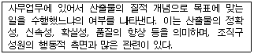
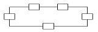

사무자동화산업기사 (2002-03-10 기출문제)
1과목: 사무자동화 시스템
1. 컴퓨터의 성능을 높이기 위하여 명령어의 처리속도를 CPU와 같도록 할 목적으로 기억장치와 CPU 사이에 사용하는 기억장치로서 용량은 주기억장치보다 작지만 속도는 CPU와 유사한 기억장치는?
- Virtual memory
- DMA
- Associate memory
- Cache memory
(정답률: 83%)

2. OA 도입의 선결과제로 옳지 않은 것은?
- 사무환경 재정비
- 데이터베이스 정비
- 사무관리제도 개혁
- 조직 및 체계의 재정비
(정답률: 66%)
3. 웹브라우저 인터넷 익스플로러에서 최근에 방문했던 모든 사이트를 보여주는 기능은?
- 목록보기
- 찾기
- 즐겨찾기
- 검색
(정답률: 77%)
4. 다음은 무엇에 대한 설명인가?

- 효율성
- 창조성
- 유효성
- 가치성
(정답률: 45%)
5. 정보처리의 과도한 집중화가 이루어져 문제점으로 등장하게 되었는데 그 문제점에 해당되지 않는 것은?
- 운용상의 문제점
- 시스템 사용상의 불편함
- Computer기기의 가격문제
- 사용자 적용업무의 개발상의 문제점
(정답률: 77%)
6. 어떤 디스크 팩이 7장으로 구성되어 있고 한면 당 200개의 트랙으로 구성되어 있을 때 이 디스크 팩에서 사용가능한 실린더의 수는 얼마인가?
- 200
- 400
- 1200
- 1400
(정답률: 67%)
7. 일반적인 응용소프트웨어에 해당되지 않는 것은?
- 워드프로세서
- 전자집계표 프로그램
- 제어프로그램
- 데이터관리 프로그램
(정답률: 58%)
8. 통합사무자동화 시스템의 개념에 대한 설명으로 알맞지 않은 것은?
- OA기기간의 통합은 기기의 공유와 데이터의 공유 등 OA 자원의 공유를 포함한다.
- OA의 통합화는 복합화된 OA에서 단순 OA로 분리시키는 방향을 의미한다.
- OA의 통합화는 조직 내에서 개별적으로 진행되던 OA를 일관성 있게 통합함을 의미한다.
- OA의 통합화는 OA기기의 통합화와 시스템의 통합화를 기반으로 한다.
(정답률: 72%)
9. 자료 저장 기기로서 종이에 인쇄된 정보를 축소 촬영한 필름에 저장하는 기기는?
- CAR(Computer Assisted Retrieval)
- COM(Computer Output Microfilm)
- 광디스크
- CD-ROM
(정답률: 76%)
10. MIS(Management Information System)의 기본구성으로 적절치 않은 것은?
- 의사 결정 시스템
- 데이터베이스 시스템
- 전자상거래 시스템
- 통신 시스템
(정답률: 49%)
11. OA(사무자동화)의 기본요건을 A, B, C, D 라고 할 때 이를 적합하게 설명하지 않은 것은?
- A-Automated Office(자동화사무실)
- B-Business Machine(사무기기)
- C-Communication System(통신시스템)
- D-Data Communication(데이터 통신)
(정답률: 73%)
12. 다음 중 사무자동화기기를 정보처리 유형에 따라 분류한 경우 거리가 먼 것은?
- 데이터 전송기기
- 데이터 교환기기
- 데이터 처리기기
- 데이터 준비기기
(정답률: 43%)
13. 사무자동화란 사무실의 기능을 자동화하는 것이다. 다음 설명 중 이러한 기능과 관계가 적은 것은?
- 사무자동화는 사용자 중심이어야 한다.
- 사무자동화는 종합적인 체제로 구성되어야 한다.
- 사무자동화는 실제적인 개념이다.
- 사무자동화는 인간과 종이를 대신할 수 있다.
(정답률: 78%)
14. 사무자동화 발전에 영향을 준 경제, 사회적 요인 중 설명이 적합하지 않은 것은?
- 최대의 이익을 추구하기 위하여 정보의 최대 활용이 요구되는 경제 환경의 변화
- 생산부문의 합리화, 자동화에 부응하여 오피스에 대한 관심의 증가로 인한 기업의 구조적 변화
- 소품종 대량생산으로 변화되고 오피스도 처리능력이 소수정밀화가 요구되는 사회풍토의 변화
- 고학력화, 고령화로 인한 인구수, 연령분포, 교육 연수의 변화
(정답률: 61%)
15. 사무자동화 기본요소 중 어떤 목적 또는 목표를 수행하기 위해 상호 관련성이 있는 처리방법이나 활동 또는 사물의 집합을 나타내는 것은?
- 철학
- 장비
- 시스템
- 인간
(정답률: 62%)
16. 사무관련 업무 수행 방식 중 상향식 접근방식에 속하지 않는 것은?
- 기업의 최하부 단위업무부터 자동화하여 그 효과를 점차 증대시키는 방식
- 업무개선, 기계화, 재편성의 단계를 거쳐 자동화 수행
- 기본조직에 거부반응이 없고 자연스럽게 활용가능
- 최고 경영자가 요구하는 최적의 시스템을 구축할 수 있는 방식
(정답률: 76%)
17. 전자상거래의 기능으로서 가장 적당하지 않은 것은?
- 통합 물류 기능
- 고객 서비스 기능
- 업무의 생산성 향상 기능
- 전자적 상품 정보 제공 기능
(정답률: 52%)
18. 다음에서 저장 기간이 가장 오래가는 것은?
- 종이
- 마이크로필름
- 자기테이프
- 광디스크
(정답률: 46%)
19. 다음 중 직접접근(direct access)이 아닌 순차적 접근을 하는 저장매체는?
- 하드디스크
- 마그네틱테이프
- CD-ROM
- ZIP 드라이브
(정답률: 59%)
20. 서로 멀리 떨어진 지역에 있는 회의실 상호간을 화상과 음성통신회선으로 접속하여 연결하는 것은?
- 원격회의 시스템
- 분산회의 시스템
- 원격조정 시스템
- 텔레텍스트
(정답률: 89%)
2과목: 사무경영관리 개론
21. 부하, 상사, 교관이 하나의 문제를 놓고 함께 해결하여 사무 간소화를 추진해 가는 방법은?
- 자발적 접근법
- 문제해결식 접근법
- 공식 프로그램법
- 순수개발식 접근법
(정답률: 87%)
22. EDI의 발생 배경이 아닌 것은?
- 전산관련 업무를 맡은 유능한 인재들의 활용
- 정보통신 기술의 발전과 첨단 정보처리에 대한 요구 증대
- 업무처리의 신속성과 대량의 정보처리에 대한 요구 증대
- 수작업 비용의 증가
(정답률: 57%)
23. 사무자동화의 주요 목적으로 볼 수 없는 것은?
- 사무업무의 효율화
- 업무의 세분화
- 유효성 향상
- 창조성 향상
(정답률: 48%)
24. 사무 계획의 구성요소에 해당하지 않는 것은?
- 예측(Forecast)
- 프로그램(Program)
- 스케줄(Schedule)
- 지표(Index)
(정답률: 56%)
25. 패스워드 선택과 사용자 관리 지침이 잘못 설명된 것은?
- 로그인명을 그대로 패스워드로 사용하지 말아야 한다.
- 사용자 개인 관련 정보를 사용하지 말아야 한다.
- 빨리 입력하기 어려운 단어로 하여야 한다.
- 대소문자, 특수 문자를 함께 조합하는 패스워드를 사용하지 말아야 한다.
(정답률: 75%)
26. 자료의 십진분류 방법 중에서 일반자료의 분류에 많이 사용되는 분류법은?
- DDC
- UDC
- NDC
- KDC
(정답률: 64%)
27. 원-라이팅 시스템(one writing system)이란?
- 한 번에 서식의 끝까지 작성할 수 있도록 설계 된 것
- 한 장의 용지에 서식의 모든 내용을 남도록 하는 것
- 한 사람이 서식의 작성을 모두 담당하는 것
- 한 번에 동시복사를 이용하여 작성하는 동시기입제도
(정답률: 50%)
28. 사무관리의 기본적 기능에 대한 내용이 아닌 것은?
- 결합기능측면
- 전략정보기능측면
- 구성요소측면
- 정보처리기능측면
(정답률: 46%)
29. 사무계획 중에서 특정 상황에 대응하여 그 때마다 만들어지는 계획을 무엇이라 하는가?
- 고정계획
- 구조계획
- 표준계획
- 개별선정계획
(정답률: 68%)
30. 문서를 보존하는 기본적 태도가 아닌 것은?
- 보존문서는 가능한 한 줄여야 한다.
- 권위가 없는 문서는 보존기간을 최소화한다.
- 문서보존규정을 만들어 준수한다.
- 가능한 한 폐기하지 않는다.
(정답률: 72%)
31. 다음 중 사무표준화의 목적이 아닌 것은?
- 관리자가 사무원들을 감독 및 통제하고 사무용어 등의 표준화에 기하고자 함
- 직원들 간의 공동 관심사에 대한 이해 촉진과 생산성 향상으로 비용절감에 기하고자 함
- 직원들의 사기를 향상시키고 직원들을 능력별로 활용하고자 함
- 직원들의 근무환경과 수입증대를 위한 기업 내 내규로써 단기간에 검토되어 모든 직원이 따르도록 하여야 함
(정답률: 73%)
32. EDI의 효과가 아닌 것은?
- 거래시간의 단축
- 업무처리 오류의 감소
- 자료출력의 감소
- 불확실성의 감소
(정답률: 54%)
33. 사무의 계획화란 어느 활동을 말하는가?
- 목적수행을 필요한 요구 대 공급비의 개발
- 결과에 대한 목표의 평가와 선정
- 기업목표에 대한 지향 활동
- 사무작업의 표준 및 조직 설정
(정답률: 35%)
34. 정보관리에 관한 설명으로 적합하지 않은 것은?
- 정보관리의 목적은 정보를 신속, 정확, 편리하게 제공함에 있다.
- 정보관리의 활동범위는 사무관리보다 광범위하다고 볼 수 있다.
- 정보관리의 범위는 정보통제기능과 정보처리기능에 국한된다.
- 정보관리의 대상은 정보의 계획, 통제, 처리 및 보관, 제공 등의 기능으로 한다.
(정답률: 64%)
35. 다음 중 프로그램 저작권의 유효기간은?(2002년도 기준 문제입니다. 2번을 누르면 정답 처리 됩니다. 자세한 내용은 해설을 참조 하세요.)
- 프로그램이 공표된 경우, 공표된 년도부터 100년간 존속
- 프로그램이 공표된 경우, 공표된 년도부터 50년간 존속
- 프로그램이 공표가 안된 경우에는 창작 년도부터 10년간 존속
- 프로그램이 공표가 안된 경우에는 창작 년도부터 20년간 존속
(정답률: 80%)
36. 다음 중 통신 기능과 책임이 각 컴퓨터 시스템과 교환기에 균등하게 나누어진 전산망 구성방법은?
- 중앙 제어망
- 분산 제어망
- 다중 제어망
- 개별 제어망
(정답률: 67%)
37. 다음 중 사무진행 통제와 거리가 먼 것은?
- TickIer System
- Come Up System
- PERT
- Taylor System
(정답률: 49%)
38. 다음 중 사무 관리의 순환구조로서 가장 적절한 것은?
- 계획화 - 통제화 - 조직화
- 계획화 - 조직화 - 통제화
- 계획화 - 통제화 - 보고화
- 조직화 - 통제화 - 보고화
(정답률: 72%)
39. 사무 관리에 대한 올바른 설명은?
- 사무실의 위치와 기기 설비 등을 효율적으로 관리하는 것을 말한다.
- 인적자원의 효율적 관리를 위하여 통제 중심의 기능을 중요시한다.
- 조직의 운영에 필요한 유용한 정보를 효율적으로 관리하는 것을 말한다.
- 현대적 사무 관리는 컴퓨터 및 사무자동화 기기 중심의 관리에 중점을 둔다.
(정답률: 57%)
40. 문서를 통한 의사전달의 특징을 가장 잘 나타낸 것은?
- 신속하게 전달할 수 있다.
- 상대의 반응을 신속하게 알 수 있다.
- 전달내용을 정확하게 전달할 수 있다.
- 비교적 세심한 감정까지 전달할 수 있다.
(정답률: 64%)
3과목: 프로그래밍 일반
41. C 언어에서 사용하는 기억클래스에 해당하지 않는 것은?
- auto
- static
- register
- scope
(정답률: 70%)
42. 어셈블리에서 16진수 상수를 정의한 명령어는?
- DC CL3"A2"
- DC XL3"A2"
- DC BL3"111"
- DC PL3"38"
(정답률: 57%)
43. 구문 분석기가 처리한 문장에 대해 그 문장의 구조를 트리 형태로 표현한 것을 무엇이라 하는가?
- 구조 트리
- 구문 트리
- 파스(parse) 트리
- 분석 트리
(정답률: 78%)
44. BNF 표기법 기호 중 "택일"을 의미하는 것은?
- I
- ::=
- < >
- { }
(정답률: 73%)
45. C 언어의 데이터 형식에 해당하지 않는 것은?
- double
- long
- char
- signed
(정답률: 71%)
46. 이산적인 입력과 출력에 유한 수의 내부 상태를 가진 시스템의 수학적 모델을 무엇이라 하는가?
- 유한 오토마타
- 정규문법
- 정규언어
- 컴파일러
(정답률: 71%)
47. 동적 바인딩(Dynamic Binding)이 이루어지는 시간이 아닌 것은?
- 프로그램 호출 시간
- 모듈의 기동 시간
- 실행시간 중 객체 사용시점
- 번역 시간
(정답률: 63%)
48. 상향식(bottom-up) 파서에 해당하는 것은?
- Predictive parser
- LL parser
- Recursive descent parser
- Shift reduce parser
(정답률: 58%)
49. 번역의 가장 기본적인 단계로 나열된 문자들을 기초적인 구성요소들인 식별자, 구분 문자, 연산기호, 핵심어, 주석 등으로 그룹화 하는 단계는?
- 어휘 분석
- 구문 분석
- 의미 분석
- 코드 생성
(정답률: 59%)
50. Array 구조와 가장 밀접한 구조는?
- 순차구조(Sequential structure)
- 접속구조(Linked structure)
- 리스트구조(List structure)
- 환형접속구조(Circular linked structure)
(정답률: 64%)
51. COBOL 언어의 PERFORM 문, C 언어의 FOR 문에 해당되는 것은?
- 반복문
- 선택문
- 조건문
- 선언문
(정답률: 62%)
52. C 언어에서 이스케이프 시퀀스의 설명이 옳지 않은 것은?
- \n : null character
- \r : carriage return
- \f : form feed
- \b : backspace
(정답률: 61%)
53. 문자열 대치, 복사, 치환 등과 같은 문자열의 조작을 편리하게 수행할 수 있도록 여러 가지 기능을 제공하며, 스트림 자료 활용의 예가 많은 언어는?
- SNOBOL
- C
- PL/1
- ADA
(정답률: 58%)
54. C 언어에서 비트 단위 논리 연산자의 종류에 해당되지 않는 것은?
- ∧
- |
- &
- ?
(정답률: 63%)
55. 특정한 작업을 수행할 수 있도록 사용자가 개발한 프로그램을 일반적으로 무엇이라 하는가?
- system program
- operating system
- application program
- compiler
(정답률: 63%)
56. C 언어의 특징으로 옳지 않은 것은?
- 시스템 프로그래밍 언어이다.
- 자료의 주소를 조작할 수 있는 포인터를 제공한다.
- 이식성이 높은 언어이다.
- 인터프리터 방식의 언어이다.
(정답률: 67%)
57. 객체지향언어(Object-Oriented Programming Language)에서 상위의 클래스가 정의한 기능과 특성을, 하위의 클래스가 이어 받는 것을 무엇이라 하는가?
- 자료 추상화(data abstraction)
- 다형성(polymorphism)
- 은닉화(encapsulation)
- 상속(inheritance)
(정답률: 79%)
58. 일반적으로 사용되는 프로그래밍 언어의 표기법은?
- infix
- prefix
- postfix
- suffix
(정답률: 72%)
59. 운영체제를 기능에 따라 분류할 때, 제어 프로그램에 해당하지 않는 것은?
- supervisor program
- data management program
- service program
- job control program
(정답률: 54%)
60. 단항연산자(unary) 연산에 해당하는 것은?
- and
- or
- complement
- xor
(정답률: 74%)
4과목: 정보통신 개론
61. 다음 중 발신가입자로부터 수신자까지의 모든 전송, 교환 과정이 디지털방식으로 처리되며, 음성과 비음성, 영상 등 서비스를 종합적으로 처리하는 통신망은?
- PSDN
- VAN
- ISDN
- PSTN
(정답률: 63%)
62. 홀수 패리티가 부가된 7비트 ASCII 코드 D(100 0001)의 송신 데이터는?
- 100 0010
- 010 0001
- 1000 0011
- 1100 0010
(정답률: 50%)
63. 정보통신 시스템의 서비스 중 통신처리기능을 가장 적합하게 설명한 것은 ?
- 전자우편, 통신망관리 체계의 기능
- 속도, 프로토콜 및 미디어 변환기능
- 각종 연산처리, 데이터베이스갱신 및 검색기능
- 전송회선, 교환 및 다중화 기능
(정답률: 39%)
64. 다음 중 뉴미디어의 특징이라고 볼 수 없는 사항은?
- 단방향성
- 네트워크화
- 분산적
- 특정 다수자
(정답률: 74%)
65. 통신망의 형태란 통신망 내에 위치한 여러 장치들 사이의 연결 모양을 지칭하는데 다음 중에서 대표적인 통신망 형태가 아닌 것은?
- 스타형(Star)
- 링형(Ring)
- 사각형(Square)
- 버스형(Bus)
(정답률: 73%)
66. 인터넷에서 사용하고 있는 통신용 프로토콜은?
- IEEE 802
- TCP/IP
- CAT 5
- 10 Base T
(정답률: 80%)
67. 정보통신시스템에서 전송방식에 따라 직렬전송과 병렬전송이 있다. 이 두 가지 전송방법 중 실제 정보통신 시스템에서 직렬전송방식을 채택하는 이유는?
- 전송속도가 빠르기 때문이다
- 터미널의 구성이 간단하기 때문이다
- 전송매체의 구성비용이 적게 들기 때문이다
- 에러(오류) 정정이 쉽기 때문이다
(정답률: 40%)
68. 다음 ISDN 서비스 중 실제로 단말을 조작하고 통신하는 이용자 측에서 본 서비스는?
- 텔리서비스
- 베어러서비스
- 부가서비스
- D채널 비접속서비스
(정답률: 42%)
69. 위성통신의 장점으로 적절하지 않은 것은?
- 통신용량 증대
- 에러율의 감소
- 우수한 전송품질
- 통신비밀 보장유지
(정답률: 68%)
70. 초당 발생한 신호의 변화 상태로 나타내는 변조속도의 기본 단위는?
- 비트(bit)
- 보(baud)
- 패킷(packet)
- 셀(cell)
(정답률: 53%)
71. 네크워크 종단(end) 시스템간의 데이터를 일관성 있게 전송해 주는 OSI 계층은?
- 응용계층
- 네트워크계층
- 트랜스포트계층
- 물리계층
(정답률: 49%)
72. 다음 통신회선 구성에 대한 설명 중 틀린 것은?
- 멀티 드롭에 사용되는 터미널은 주소 판단 기능과 데이터 블록을 일시 저장할 수 있는 버퍼를 가지고 있어야 한다.
- 다중화 방식에서 통신회선의 고장시 고장지점 이후의 터미널은 모두 운영 불능에 빠지는 단점이 있다.
- 포인트 투 포인트 방식은 멀티 드롭 방식보다 모뎀의 시설 수량을 줄일 수 있다.
- 멀티 포인트 방식을 멀티 드롭 방식이라고도 한다.
(정답률: 40%)
73. 정보통신을 위해 한 시스템이 다른 시스템과 통신을 원활하게 수행할 수 있도록 해주는 통신 규약은?
- 인터페이스
- 통신 소프트웨어
- 통신 프로토콜
- 통신 처리
(정답률: 72%)
74. 정보통신 시스템의 기본 구성요소와 거리가 먼 것은?
- 다중변환장치
- 가입자단말장치
- 신호변환장치
- 통신제어장치
(정답률: 40%)
75. HDLC(High level Data Link Control) 프로토콜에 대한 설명으로 옳지 않은 것은?
- 흐름 및 오류제어를 위한 방식으로 ARQ를 사용할 수 있다.
- 링크는 점 대 점, 다중점, 및 루프 형태로 구성할 수 있다.
- 특정 문자 코드에 따라서 필드의 해석이 달라지므로 코드에 의존성을 갖는다.
- 단방향, 반이중, 전이중 방식의 통신방식을 제공한다.
(정답률: 52%)
76. 다음 중 ISDN의 사용자 망 인터페이스에서 기준점이 아닌 것은?
- Terminal(T)
- Rate(R)
- Terminal Adapter(TA)
- System(S)
(정답률: 47%)
77. ISDN의 베어러 서비스에 해당되는 것은?
- 텔레텍스
- 혼합모드
- 비디오텍스
- 회선교환
(정답률: 44%)
78. 그림과 같은 네트워크 형상(Topology)에 해당되는 것은?

- 성(star)형
- 버스(Bus)형
- 로터리(Rotary)형
- 링(Ring)형
(정답률: 65%)
79. 다음 중 패킷(Packet)을 가장 잘 설명한 것은?
- 회선교환방식에 주로 사용되며, 주 스테이션 사이에 통신을 할 수 있는 경로가 제공되는 경우를 말한다.
- 전송 혹은 다중화의 목적으로 메시지를 정해진 크기의 비트 수로 나눈 다음 정해진 형식에 맞추어 만들어진 데이터의 블럭이다.
- 버스형망, 환형망, 성형망, 망형망 등의 어떤 망구조에서도 편리하게 사용할 수 있는 데이터 교환방식에 가장 적합한 전송회선이다.
- 경로 변경방식에 따라 교환기, 통신회선 등의 장애가 발생할 경우에도 대체 경로를 선택할 수 있지만 네트워크의 신뢰성은 매우 낮다.
(정답률: 57%)
80. 다음 중 미국의 군사용 방공 시스템으로 사용된 최초의 데이터통신 시스템은?
- ARPA
- CTSS
- SABRE
- SAGE
(정답률: 65%)